Your face for thumbnails, round 2
Built from yesterday's 4K recording (your face is about 630 pixels tall there, against about 400 in the A2P footage). Versions 1 to 10 are AI made studio portraits of you. R1 to R3 are real frames, so you can compare.
Tell me by number: which look like you, which do not, and what is off (eyes, beard, skin, smile, age). Example: "1 and 4 yes, 2 teeth too white, 5 no". The ones you approve become your fixed face set for every thumbnail. Background and words come after.
Second pass: closest to you
Lighter beard, fair skin and softer light, corrected after the first pass came out too dark.

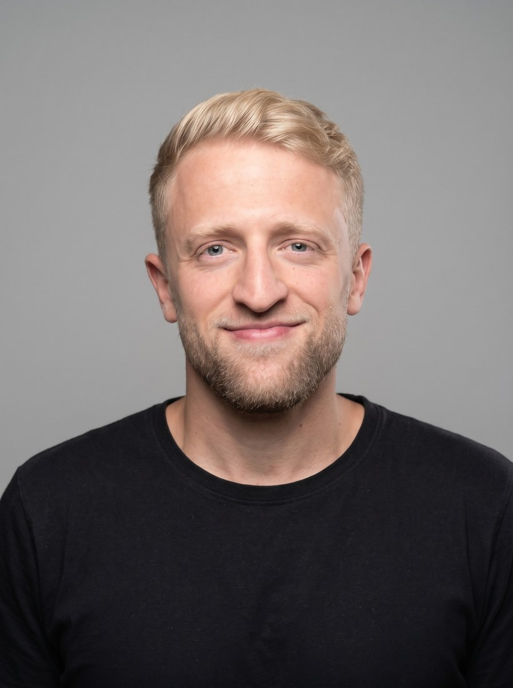

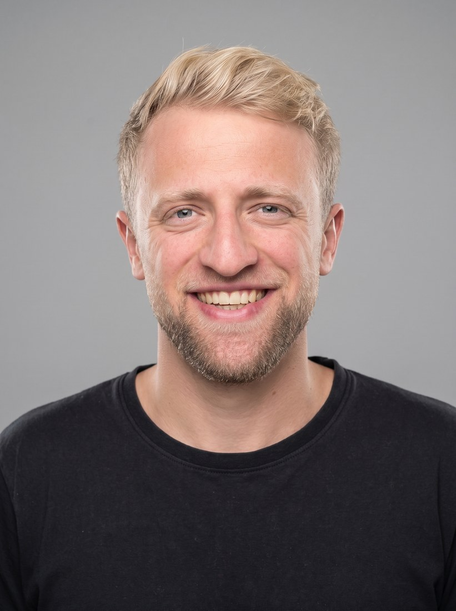

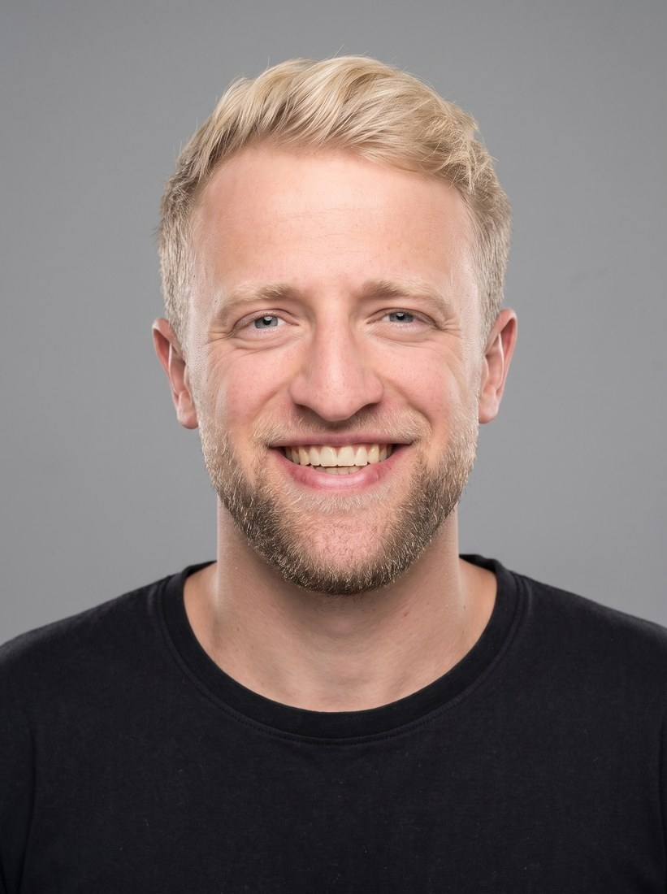

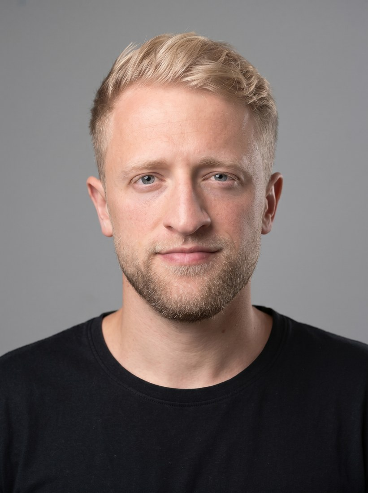

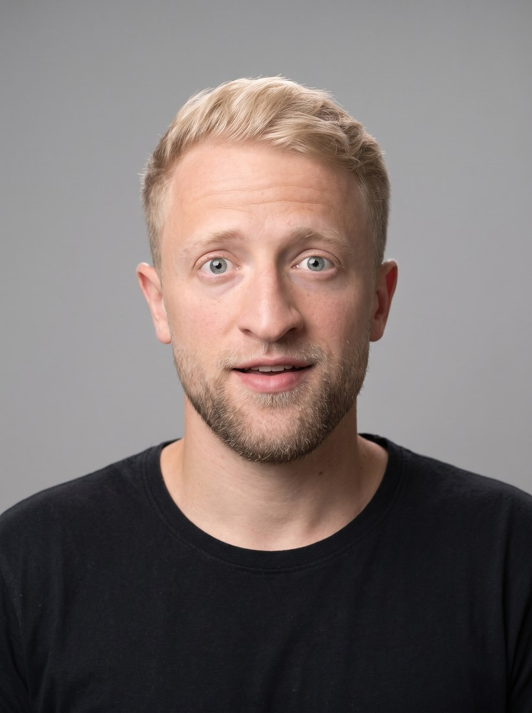
First pass
Sharper light and more contrast. Some people prefer this look; the beard is darker than yours.


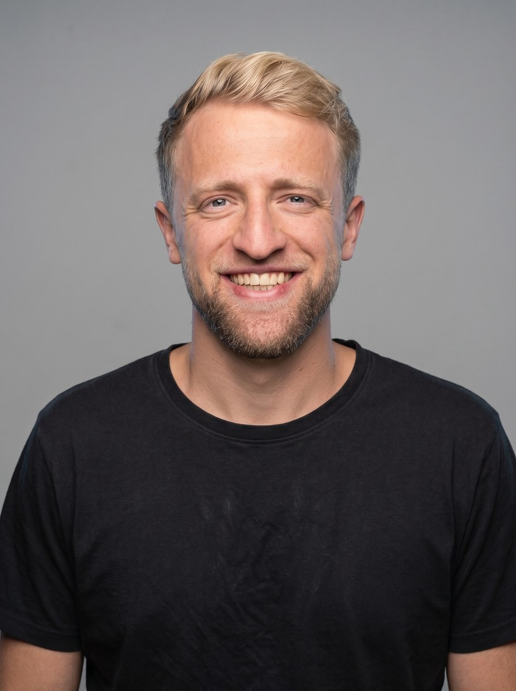

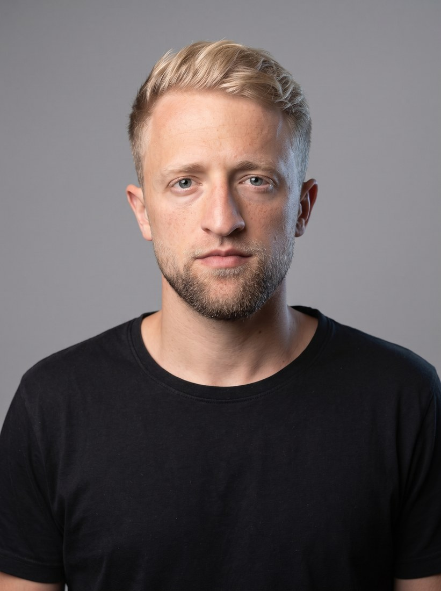

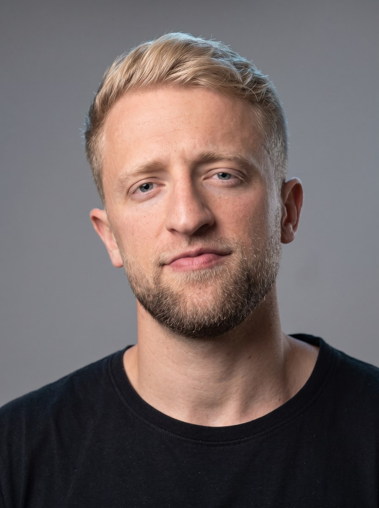

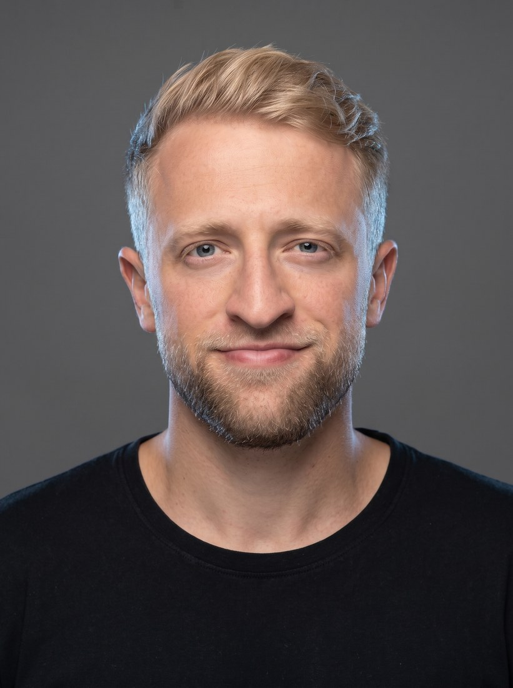
The real you, for comparison

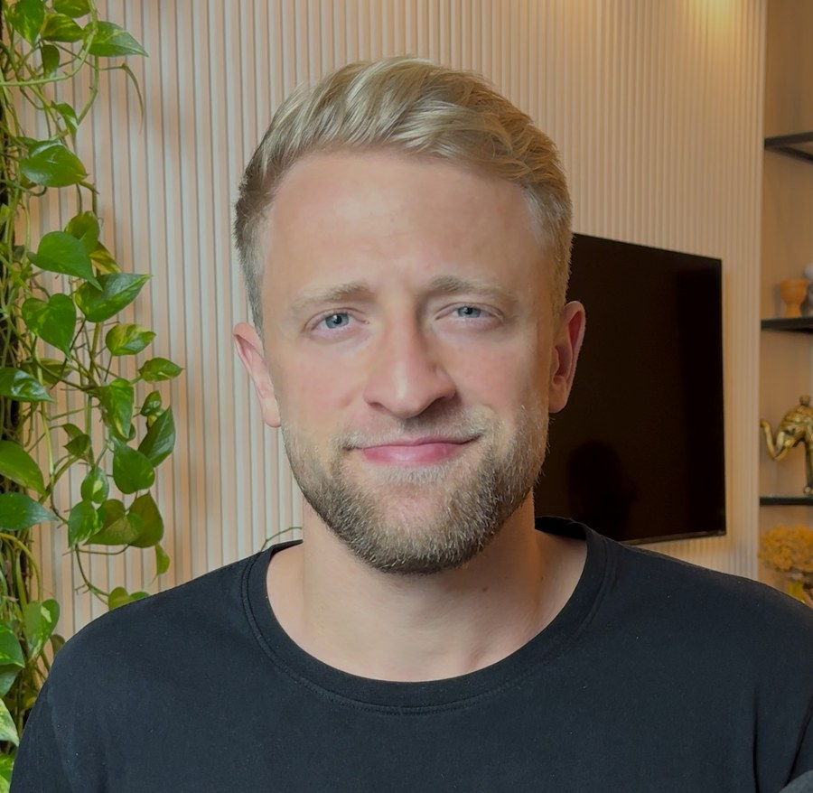

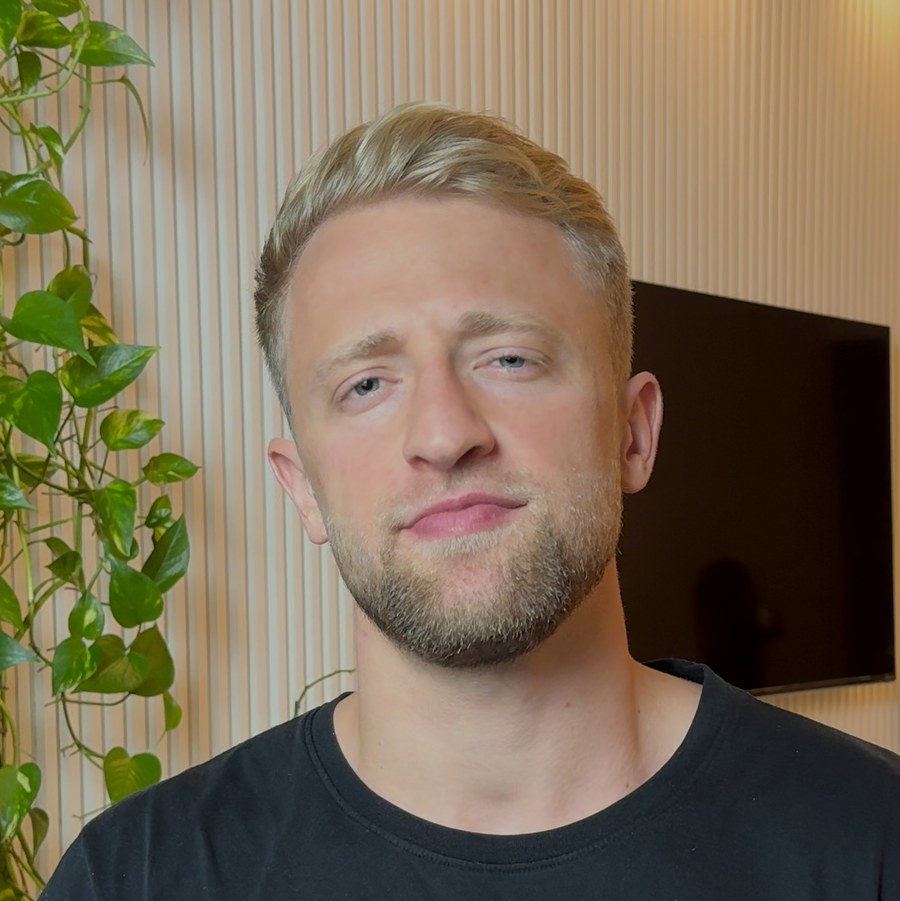

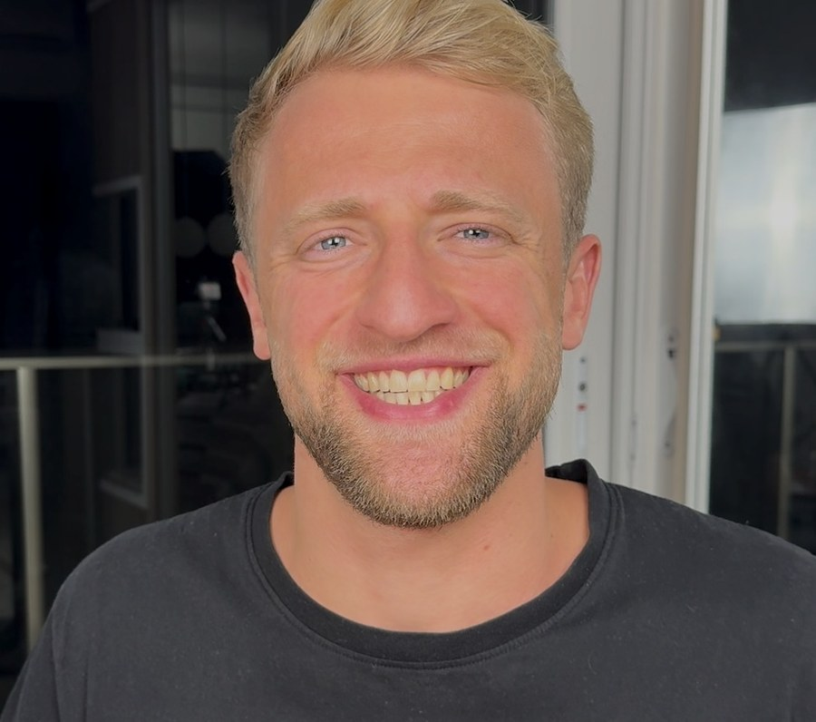
At thumbnail size
Versions 1, 2 and 4 smaller than in this morning's thumbnails: the face is about 36 percent of the frame height, the lower end of your own 2023 and 2024 thumbnails (they run 32 to 50 percent), with the shoulders in view. Plain ground on purpose: the background comes after the face.
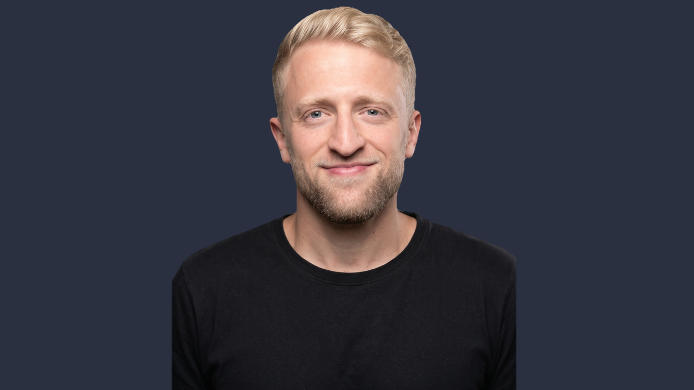
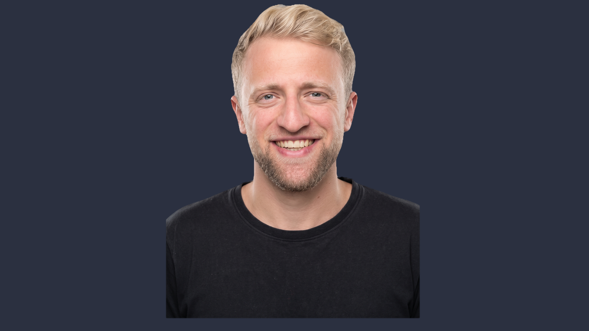